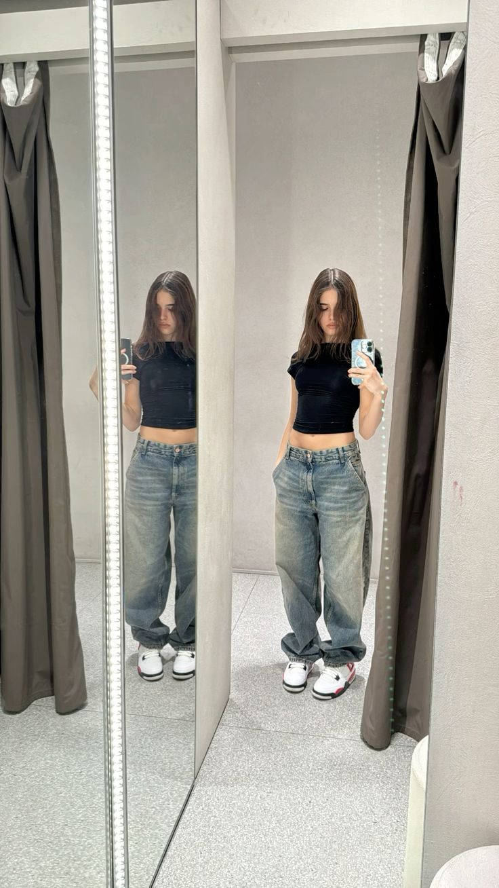

BERSHKA
Creada en 1998, Bershka es una firma especializada en moda
joven para hombre y mujer propiedad del grupo español Inditex.
Fundado por Amancio Ortega en 1985, el Grupo se dedica a la
fabricación, venta y distribución de complementos y artículos
de moda para hombres, mujeres y niños.
PRENDAS MAS POPULARES
- Vestido denim largo
- Vestido midi bandeau
- Jeans cargo multipocket
- Body manga larga
- Jeans cargo skater fit efecto lavado dirty

BERSHKA
TALLAS
| XXS/XS |
XS/S |
S/M |
| M/L |
L/XL |
XXL |
PRENDAS MAS VENDIDA
- Camiseta manga larga tul print
- Body manga larga frunce lateral
- Camiseta manga larga bardot rib
- Jeans cargo skater fit efecto lavado dirty
- Jeans super cargo
Actualmente distribuye sus productos de ropa, calzado y complementos
a través de tres líneas principales: Bershka, BSK y Hombre. El área de
mujer, formada por las líneas Bershka y BSK, continúa siendo la más
importante de la cadena. Y mientras la primera se centra en la moda
más actual y en las últimas tendencias, BSK se dirige a un público más joven.